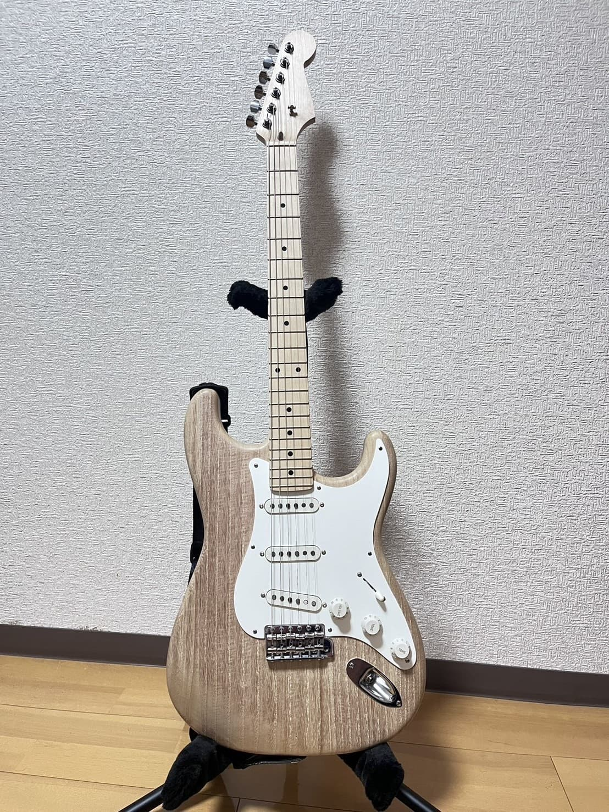
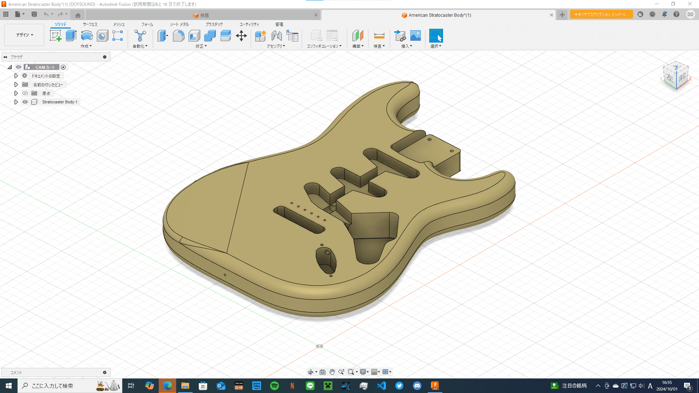
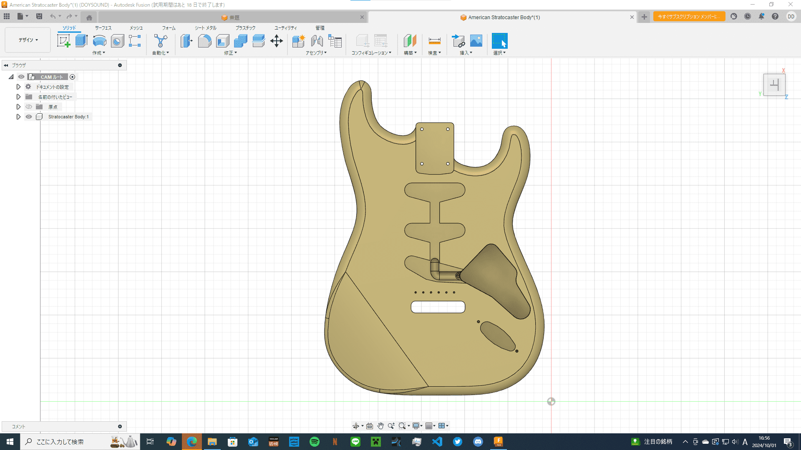
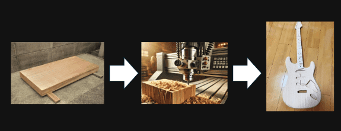
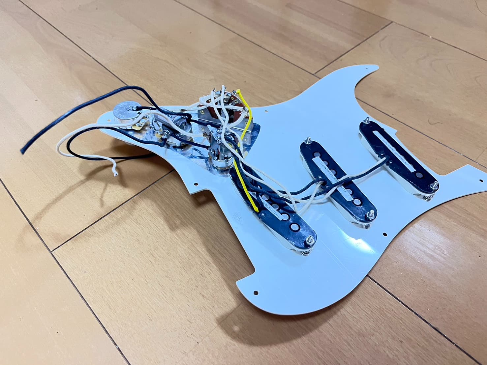
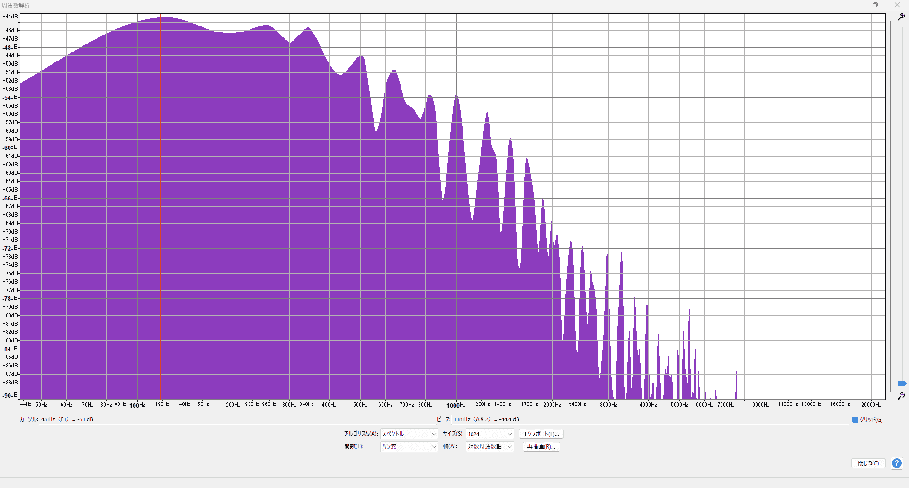
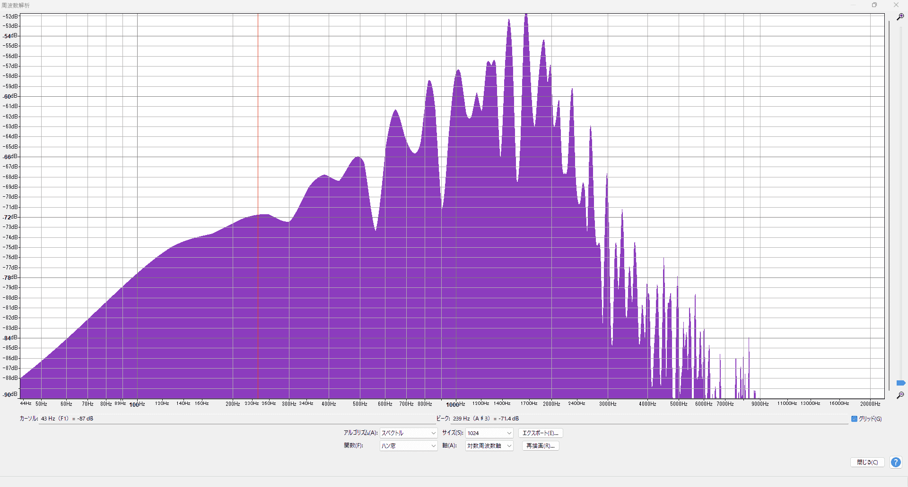

ストラトキャスタータイプギター

桐材を用いたストラトキャスタータイプのギターを製作しました。ギターの3Dモデルを用いてCNC加工機で
木材を削り出し、配線を行いました。
また、全てのパーツにおいて日本製のものを採用しました。
3Dモデリング


CNC加工

モデルをもとにCNC加工機で加工を行っていただきました。
配線

演奏時にボリュームノブ手が当たって音量が意図せず変化するのを防ぐために、
ボリュームポッドにスイッチポッドを採用し、ボリュームの抵抗をバイパスできるようにしました。
試奏動画
スペクトル解析


左側がFender Japanのストラトキャスターの音をスペクトル解析したもので、
右側が今回製作したギターを解析したものです。
Fender Japanのストラトキャスターに比べ、低音域が大幅に削られ、
より明るい印象の音であることが分かります。